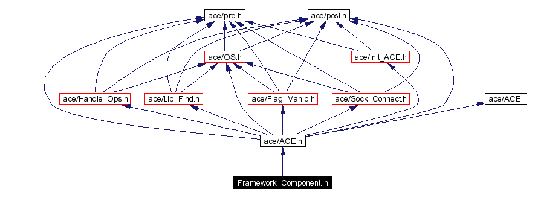
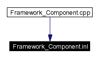

Main Page Class Hierarchy Alphabetical List Compound List File List Compound Members File Members Related Pages
Framework_Component.inl File Reference
#include "ace/ACE.h"
Include dependency graph for Framework_Component.inl:

This graph shows which files directly or indirectly include this file:

Generated on Wed Jan 15 18:21:33 2003 for ACE by
 1.2.13.1 written by Dimitri van Heesch,
© 1997-2001
1.2.13.1 written by Dimitri van Heesch,
© 1997-2001